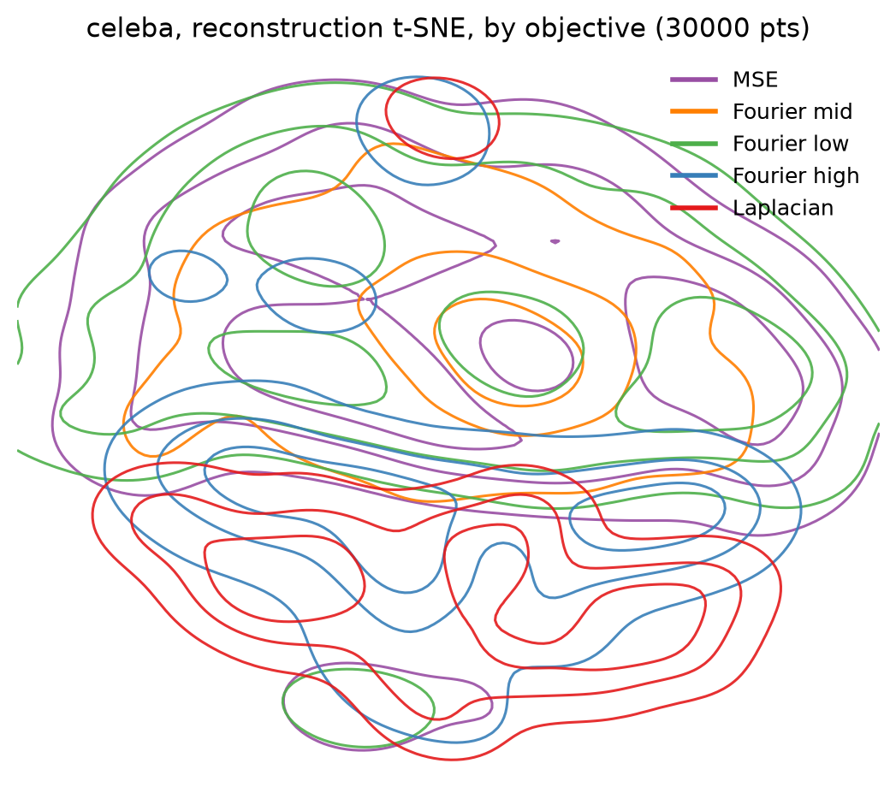
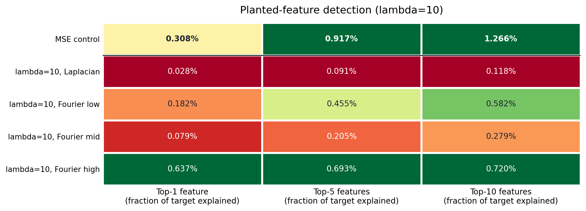

The same data has many valid dictionaries. Can the loss pick one?
Sparse autoencoders (SAEs) are the standard tool for asking a network what it has represented: you train a small sparse model to reconstruct the network's activations, and its learned directions, a dictionary of features, become your vocabulary for explaining it.
The uncomfortable part is that the dictionary you get depends on things that have nothing to do with the data. Train two SAEs on identical data with identical objectives, changing only the random seed, and you can get very different feature sets. Earlier work found as little as ~30% overlap for TopK SAEs on a language model.
Every standard objective just says "reconstruct well under a sparsity budget." None of them says which of the many equally good reconstructions to prefer. So we asked whether we could say it ourselves.
The idea
Add a geometry-specific term to the loss:
MSE + λ · Transform(loss)
where the transform is an edge detector (Laplacian) or a band of spatial frequency (Fourier low, mid or high). We can show this doesn't sacrifice anything the SAE could represent under plain MSE, and that it can flip which of two equally reconstructive dictionaries gets chosen. In other words, the objective becomes a knob for choosing a vocabulary on purpose.
Does the knob work?
We trained matched TopK SAEs on the latent space of a convolutional autoencoder (face images), varying only the transform and λ, with only the seed changing inside each setting.

- The dictionaries differ more by objective than two same-objective SAEs differ by seed.
- Every objective reconstructs as well as an MSE-only SAE, so the cost is not paid in fidelity.
- The differences are functional, not cosmetic: objective-matched SAEs recover an artificially planted signal with matching geometry better, make different downstream attributes easier to read out with linear probes, and fail on different, objective-specific sets of held-out images.
- Combining all four objectives into a single five-branch model keeps the specialization inside one SAE, at a small reconstruction cost (about 1.3 points of explained variance).

Where I'd be careful
This is TopK SAEs on one convolutional autoencoder, trained on faces. I haven't tested language models (the transforms are image-specific and would need an analogue), a production-scale model, or a different backbone. The failure-mode result is correlational: objective predicts which images an SAE fails on, not why. The planted-recovery numbers are small in absolute terms, since planted signals are out-of-distribution by construction, though their ranking across objectives is consistent. And we picked the four transforms by hand from prior knowledge of what matters for faces.
Why I like it
Interpretability usually treats an SAE dictionary as a fixed artifact of whatever seed and hyperparameters happened to be used. Here the training objective is itself a lever, as controllable as sparsity or dictionary size.
If you want to poke at real activations yourself, the interpretability explorer lets you click through attention and the logit lens in a real transformer.